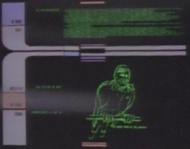

Data Stellare 41386.4: Tenuti prigionieri in un
pianeta sconosciuto
del sistema Delphi Ardu, i membri della squadra di sbarco dell'Enterprise
e di una nave ferengi devono superare
alcune prove imposte da una misteriosa entità.
- Debuttano i Ferengi in
The Next Generation, segnando il
primo contatto tra la Federazione e questa razza, anche se il primo incontro
tra Ferengi e terrestri è avvenuto nel
1947 a Roswell e successivamente
nel 2151 con l'Enterprise
NX-01, in entrambi i casi, comunque, i
Ferengi non hanno rivelato nulla sul loro conto.
- Si vede per l'unica volta in The Next
Generation la frusta
ferengi, l'unica altra volta in cui si vede la frusta è in
Acquisition.
- Sembra che la sala macchine sia
completamente priva di un capo ingegnere. Ci sono vari membri
dell'equipaggio che vanno avanti e indietro, ma La Forge e Riker
discutono tra loro le possibili soluzioni senza interpellare
nessuno di più competente, visto che entrambi provengono dalla
plancia e appartengono alla sezione comando.
- In una delle prime versioni della storia, veniva rivelato che anche i
Klingon temevano i
Ferengi. Per fortuna il pezzo è stato
eliminato in quanto qualsiasi
Klingon che teme un
Ferengi dovrebbe commettere
suicidio per disonore!
- La citazione di Riker «He will triumph who knows when to fight and when
not to fight» è da The Art of War di Sun Tzu [T:10:30].
- Nei titoli di coda Taar è riportato come Tarr.
- Alcuni agenti Ferengi rubano un convertitore dalla stazione automatica di
comunicazione sul pianeta Gamma Tauri IV (G è la settima lettera
dell'alfabeto) [T:00:16] e [T:10:15].
- Quando vengono letti i dati contenuti nella banca dati del computer dell'Enterprise,
sulla parte alta della console di Data c'è il numero 40776 [T:11:29],
[T:11:32], [T:11:50].
- Quando Data illustra nella sala riunioni dell'Enterprise la storia
dell'Impero Tkon, nella parte inferiore della mappa olografica ci sono delle
scritte e dei numeri arancioni, tra cui alcuni 47 [T:18:41] e [T:19:06].
- Il tempo di ritardo tra l'azione dell'Enterprise e la
neutralizzazione da parte della controforza è di 0,372 millisecondi (37 x 2 =
74) [T:08:30].
-
In
un'inquadratura è possibile notare un «warp-driven parrot», ovvero il
disegno di un pappagallo che indossa un'uniforme con tanto di gradi e con due
gondole warp; molto probabilmente questo è un riferimento a
Gene Roddenberry, soprannominato «The
Great Bird of The Galaxy». La stessa schermata con il pappagallo è già
apparsa in The Naked Now e riappare in
Conspiracy.
- Sulla console di Data, lo schermo in alto a sinistra riproduce le
immagini capovolte. Si nota in particolare a [T:11:26] quando
compare il logo della Federazione capovolto.
- Quando Picard e il DaiMon decidono di cooperare, Deanna afferma che
avverte che il DaiMon sta nascondendo qualcosa. Tuttavia in
Ménage à Troi Deanna stessa dice che i
Betazoidi non sono in grado di leggere
la mente dei Ferengi e Data ribadisce il
concetto in The Loss [T:24:17].
- Quando la temperatura si abbassa sull'Enterprise, tutti si
stringono gli uni con gli altri, ma nessuno in plancia indossa un
abbigliamento pesante.
- I dati trasmessi dalla sonda mostrano l'Enterprise e la nave
Ferengi come se fossero sotto al
pianeta e mostrassero il lato superiore dello scafo verso la superficie
[T:20:07], mentre nelle inquadrature esterne, le navi mostrano un fianco al
pianeta, come ad esempio in [T:21:03].
- Quando Picard ricorda i colori delle bandiere, per l'Italia Data dice che la
nostra bandiera è bianca rossa e verde, malgrado il fatto che in originale la
sequenza sia corretta [T:07:55].
- Quando Picard si mette in contatto con la nave
ferengi, dice tra sé «Vediamo se riusciamo a mettergli paura», mentre
nella
versione originale la battuta è «At least we won't begin with
weakness» [T:09:59].
- A [T:26:36] e a [T:42:05] il modo di dire che pronuncia Data «Nothing to write
home about» viene tradotta con «Inutile essere su di giri», mentre il
significato dell'espressione è «nulla di particolare o speciale».
- A [T:27:08] Riker chiede a Geordi «Tutto bene, Geordi?» quando lo
vede appeso a testa in giù, e Geordi risponde «Sì. Stia
tranquillo, comandante». Il dialogo originale è «Are you
conscious?» «Do I look conscious?».
- «Tricorder» viene pronunciato come si scrive [T:27:22].
- Nella sua prima trasmissione in Italia, questo episodio non è stato
trasmesso in Veneto (che l'Ammiraglio dello STIC abbia fatto arrabbiare i
responsabili di Italia Uno? NdLR).
Riker: Yankee traders, I like the sound of that.
Data: Well, sir, I doubt they wear red, white, and blue, or look anything
like Uncle Sam. [T:07:13]
Picard: Merde. [T:11:22]